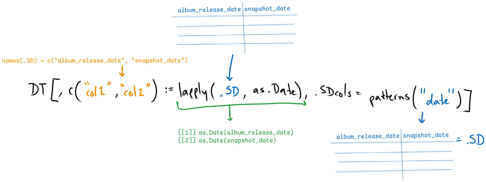
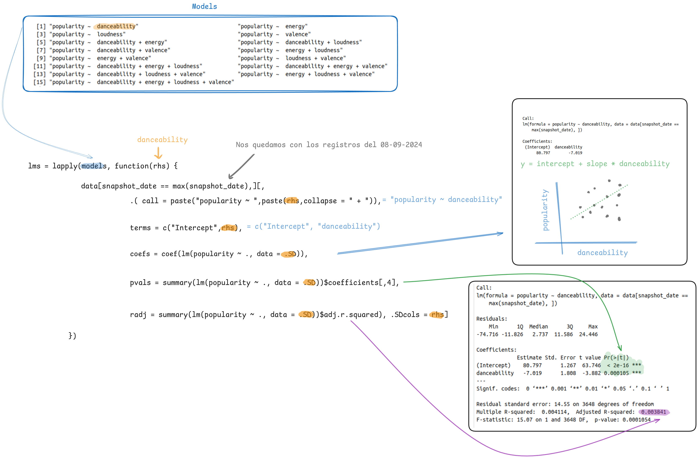

identical(data, data[ , .SD])[1] TRUEUna herramienta muy útil en data.table es .SD. El nombre viene de .Subset Data.table y se puede pensar que es una autoreferencia a la misma tabla. Es difícil describir los usos de .SD por lo que lo haremos a través de ejemplos.
El uso más sencillo de .SD es la realización de subconjuntos. Un uso trivial sería generar el subconjunto de toda la tabla.
También se puede usar para hacer subconjuntos de columnas. En .SDcols se pueden especificar las columnas a las que hace referencia .SD.
Classes 'data.table' and 'data.frame': 1179453 obs. of 2 variables:
$ artists: chr "Lady Gaga, Bruno Mars" "Billie Eilish" "Sabrina Carpenter" "Sabrina Carpenter" ...
$ name : chr "Die With A Smile" "BIRDS OF A FEATHER" "Taste" "Espresso" ...
- attr(*, ".internal.selfref")=<externalptr> Otro ejemplo más útil: en secciones anteriores del taller les pedí que generaran un subconjunto de data que solo tuviera las variables numéricas de la tabla. Utilizando .SD lo podemos hacer fácilmente si especificamos la condición de que las columnas sean numéricas en el argumento .SDcols
Classes 'data.table' and 'data.frame': 1179453 obs. of 17 variables:
$ daily_rank : int 1 2 3 4 5 6 7 8 9 10 ...
$ daily_movement : int 0 0 0 46 0 2 43 1 -2 1 ...
$ weekly_movement : int 0 0 0 46 0 1 43 0 41 -1 ...
$ popularity : int 97 100 94 83 94 96 84 97 77 91 ...
$ duration_ms : int 251667 210373 157279 175459 170887 195824 186365 218423 190427 180304 ...
$ danceability : num 0.521 0.747 0.674 0.699 0.66 0.924 0.675 0.7 0.466 0.472 ...
$ energy : num 0.592 0.507 0.907 0.776 0.756 0.668 0.586 0.582 0.872 0.471 ...
$ key : int 6 2 3 0 0 11 9 11 7 10 ...
$ loudness : num -7.78 -10.17 -4.09 -5.28 -3.74 ...
$ mode : int 0 1 1 1 0 1 1 0 1 1 ...
$ speechiness : num 0.0304 0.0358 0.064 0.0293 0.032 0.0469 0.0531 0.0356 0.0336 0.0603 ...
$ acousticness : num 0.308 0.2 0.101 0.131 0.00289 0.446 0.257 0.0502 0.0156 0.151 ...
$ instrumentalness: num 0.00 6.08e-02 0.00 5.36e-06 0.00 5.94e-04 0.00 0.00 0.00 0.00 ...
$ liveness : num 0.122 0.117 0.297 0.205 0.193 0.0678 0.104 0.0881 0.121 0.14 ...
$ valence : num 0.535 0.438 0.721 0.708 0.838 0.787 0.621 0.785 0.806 0.219 ...
$ tempo : num 158 105 113 104 116 ...
$ time_signature : int 3 4 4 4 4 4 4 4 4 3 ...
- attr(*, ".internal.selfref")=<externalptr> También podemos utilizar .SD para refereciar un subconjunto de columnas y aplicar funciones sobre ellas. Por ejemplo, imagina si quisieras cambiar el tipo de datos de muchas columnas fácilmente. Para este ejemplo vamos a volver a leer la tabla de las canciones populares, sin embargo, esta vez vamos a asignar a todas las columnas el tipo de datos de caracter.
Primero vamos a utilizar la función patterns() en .SDcols() para seleccionar las columnas que se refieren a fechas. Modificamos el tipo de datos de las columnas seleccionadas con ese patrón a fecha.

# Cambiar el tipo de datos a las columnas de fechas
data[,names(.SD) := lapply(.SD,as.Date),.SDcols = patterns('_date')]
str(data)Classes 'data.table' and 'data.frame': 1179453 obs. of 25 variables:
$ spotify_id : chr "2plbrEY59IikOBgBGLjaoe" "6dOtVTDdiauQNBQEDOtlAB" "5G2f63n7IPVPPjfNIGih7Q" "2HRqTpkrJO5ggZyyK6NPWz" ...
$ name : chr "Die With A Smile" "BIRDS OF A FEATHER" "Taste" "Espresso" ...
$ artists : chr "Lady Gaga, Bruno Mars" "Billie Eilish" "Sabrina Carpenter" "Sabrina Carpenter" ...
$ daily_rank : chr "1" "2" "3" "4" ...
$ daily_movement : chr "0" "0" "0" "46" ...
$ weekly_movement : chr "0" "0" "0" "46" ...
$ country : chr "" "" "" "" ...
$ snapshot_date : Date, format: "2024-09-08" "2024-09-08" "2024-09-08" "2024-09-08" ...
$ popularity : chr "97" "100" "94" "83" ...
$ is_explicit : chr "False" "False" "False" "True" ...
$ duration_ms : chr "251667" "210373" "157279" "175459" ...
$ album_name : chr "Die With A Smile" "HIT ME HARD AND SOFT" "Short n' Sweet" "Short n' Sweet" ...
$ album_release_date: Date, format: "2024-08-16" "2024-05-17" "2024-08-23" "2024-08-23" ...
$ danceability : chr "0.521" "0.747" "0.674" "0.699" ...
$ energy : chr "0.592" "0.507" "0.907" "0.776" ...
$ key : chr "6" "2" "3" "0" ...
$ loudness : chr "-7.777" "-10.171" "-4.086" "-5.282" ...
$ mode : chr "0" "1" "1" "1" ...
$ speechiness : chr "0.0304" "0.0358" "0.064" "0.0293" ...
$ acousticness : chr "0.308" "0.2" "0.101" "0.131" ...
$ instrumentalness : chr "0.0" "0.0608" "0.0" "5.36e-06" ...
$ liveness : chr "0.122" "0.117" "0.297" "0.205" ...
$ valence : chr "0.535" "0.438" "0.721" "0.708" ...
$ tempo : chr "157.969" "104.978" "112.964" "103.963" ...
$ time_signature : chr "3" "4" "4" "4" ...
- attr(*, ".internal.selfref")=<externalptr> # Cambiar el tipo de datos a las columnas numéricas
numeric_cols <- c("daily_rank","daily_movement","weekly_movement","popularity","duration_ms","danceability","energy","key","loudness","mode","speechiness","acousticness","instrumentalness","liveness","valence","tempo","time_signature")
data[,names(.SD) := lapply(.SD,as.numeric), .SDcols = numeric_cols]
str(data)Classes 'data.table' and 'data.frame': 1179453 obs. of 25 variables:
$ spotify_id : chr "2plbrEY59IikOBgBGLjaoe" "6dOtVTDdiauQNBQEDOtlAB" "5G2f63n7IPVPPjfNIGih7Q" "2HRqTpkrJO5ggZyyK6NPWz" ...
$ name : chr "Die With A Smile" "BIRDS OF A FEATHER" "Taste" "Espresso" ...
$ artists : chr "Lady Gaga, Bruno Mars" "Billie Eilish" "Sabrina Carpenter" "Sabrina Carpenter" ...
$ daily_rank : num 1 2 3 4 5 6 7 8 9 10 ...
$ daily_movement : num 0 0 0 46 0 2 43 1 -2 1 ...
$ weekly_movement : num 0 0 0 46 0 1 43 0 41 -1 ...
$ country : chr "" "" "" "" ...
$ snapshot_date : Date, format: "2024-09-08" "2024-09-08" "2024-09-08" "2024-09-08" ...
$ popularity : num 97 100 94 83 94 96 84 97 77 91 ...
$ is_explicit : chr "False" "False" "False" "True" ...
$ duration_ms : num 251667 210373 157279 175459 170887 ...
$ album_name : chr "Die With A Smile" "HIT ME HARD AND SOFT" "Short n' Sweet" "Short n' Sweet" ...
$ album_release_date: Date, format: "2024-08-16" "2024-05-17" "2024-08-23" "2024-08-23" ...
$ danceability : num 0.521 0.747 0.674 0.699 0.66 0.924 0.675 0.7 0.466 0.472 ...
$ energy : num 0.592 0.507 0.907 0.776 0.756 0.668 0.586 0.582 0.872 0.471 ...
$ key : num 6 2 3 0 0 11 9 11 7 10 ...
$ loudness : num -7.78 -10.17 -4.09 -5.28 -3.74 ...
$ mode : num 0 1 1 1 0 1 1 0 1 1 ...
$ speechiness : num 0.0304 0.0358 0.064 0.0293 0.032 0.0469 0.0531 0.0356 0.0336 0.0603 ...
$ acousticness : num 0.308 0.2 0.101 0.131 0.00289 0.446 0.257 0.0502 0.0156 0.151 ...
$ instrumentalness : num 0.00 6.08e-02 0.00 5.36e-06 0.00 5.94e-04 0.00 0.00 0.00 0.00 ...
$ liveness : num 0.122 0.117 0.297 0.205 0.193 0.0678 0.104 0.0881 0.121 0.14 ...
$ valence : num 0.535 0.438 0.721 0.708 0.838 0.787 0.621 0.785 0.806 0.219 ...
$ tempo : num 158 105 113 104 116 ...
$ time_signature : num 3 4 4 4 4 4 4 4 4 3 ...
- attr(*, ".internal.selfref")=<externalptr> 
[1] "daily_rank" "daily_movement" "weekly_movement" "popularity" "duration_ms" "danceability"
[7] "energy" "key" "loudness" "mode" "speechiness" "acousticness"
[13] "instrumentalness" "liveness" "valence" "tempo" "time_signature" vars <- c("danceability","energy","loudness","valence")
# Queremos generar modelos para evaluar como es que diferentes variables afectan la popularidad de las canciones.
models = unlist(
lapply(1:length(vars), combn, x = vars, simplify = FALSE),
recursive = FALSE
)
lms = lapply(models, function(rhs) {
data[snapshot_date == max(snapshot_date),][,
.( call = paste("popularity ~ ",paste(rhs,collapse = " + ")),
terms = c("Intercept",rhs),
coefs = coef(lm(popularity ~ ., data = .SD)),
pvals = summary(lm(popularity ~ ., data = .SD))$coefficients[,4],
radj = summary(lm(popularity ~ ., data = .SD))$adj.r.squared), .SDcols = rhs]
})
results <- do.call(rbind,lms)
results call terms coefs pvals radj
<char> <char> <num> <num> <num>
1: popularity ~ danceability Intercept 80.7967185 0.000000e+00 0.0038409790
2: popularity ~ danceability danceability -7.0185585 1.054422e-04 0.0038409790
3: popularity ~ energy Intercept 75.3984610 0.000000e+00 -0.0001964094
4: popularity ~ energy energy 0.8393845 5.944860e-01 -0.0001964094
5: popularity ~ loudness Intercept 81.1326815 0.000000e+00 0.0185124047
6: popularity ~ loudness loudness 0.8404004 9.094862e-17 0.0185124047
7: popularity ~ valence Intercept 76.4707397 0.000000e+00 -0.0001009337
8: popularity ~ valence valence -0.8735183 4.267732e-01 -0.0001009337
9: popularity ~ danceability + energy Intercept 79.8274497 0.000000e+00 0.0038830556
10: popularity ~ danceability + energy danceability -7.2866017 6.667336e-05 0.0038830556
11: popularity ~ danceability + energy energy 1.7063111 2.827648e-01 0.0038830556
12: popularity ~ danceability + loudness Intercept 87.2954408 0.000000e+00 0.0242839740
13: popularity ~ danceability + loudness danceability -8.5421084 2.094869e-06 0.0242839740
14: popularity ~ danceability + loudness loudness 0.8865057 2.081684e-18 0.0242839740
15: popularity ~ danceability + valence Intercept 80.6688428 0.000000e+00 0.0037116726
16: popularity ~ danceability + valence danceability -7.5545692 1.117191e-04 0.0037116726
17: popularity ~ danceability + valence valence 0.8598207 4.681146e-01 0.0037116726
18: popularity ~ energy + loudness Intercept 95.5444590 0.000000e+00 0.0318278066
19: popularity ~ energy + loudness energy -15.2170897 1.018161e-12 0.0318278066
20: popularity ~ energy + loudness loudness 1.5109508 7.496977e-28 0.0318278066
21: popularity ~ energy + valence Intercept 75.6821337 0.000000e+00 -0.0001632938
22: popularity ~ energy + valence energy 1.4861428 3.794880e-01 -0.0001632938
23: popularity ~ energy + valence valence -1.2478374 2.898194e-01 -0.0001632938
24: popularity ~ loudness + valence Intercept 83.6290602 0.000000e+00 0.0207621082
25: popularity ~ loudness + valence loudness 0.9224723 1.098387e-18 0.0207621082
26: popularity ~ loudness + valence valence -3.4472810 2.208550e-03 0.0207621082
27: popularity ~ danceability + energy + loudness Intercept 100.0481692 1.430542e-314 0.0360083632
28: popularity ~ danceability + energy + loudness danceability -7.3625488 4.208326e-05 0.0360083632
29: popularity ~ danceability + energy + loudness energy -14.3638888 1.901093e-11 0.0360083632
30: popularity ~ danceability + energy + loudness loudness 1.5130927 4.900052e-28 0.0360083632
31: popularity ~ danceability + energy + valence Intercept 79.8800544 0.000000e+00 0.0036504766
32: popularity ~ danceability + energy + valence danceability -7.5546944 1.117446e-04 0.0036504766
33: popularity ~ danceability + energy + valence energy 1.4866175 3.784253e-01 0.0036504766
34: popularity ~ danceability + energy + valence valence 0.4854107 6.998260e-01 0.0036504766
35: popularity ~ danceability + loudness + valence Intercept 87.8106988 0.000000e+00 0.0245573824
36: popularity ~ danceability + loudness + valence danceability -7.5322741 9.897288e-05 0.0245573824
37: popularity ~ danceability + loudness + valence loudness 0.9219472 9.869172e-19 0.0245573824
38: popularity ~ danceability + loudness + valence valence -1.7175924 1.550976e-01 0.0245573824
39: popularity ~ energy + loudness + valence Intercept 95.9081399 0.000000e+00 0.0319746744
40: popularity ~ energy + loudness + valence energy -14.4959094 5.522847e-11 0.0319746744
41: popularity ~ energy + loudness + valence loudness 1.5135831 6.128533e-28 0.0319746744
42: popularity ~ energy + loudness + valence valence -1.4453949 2.127262e-01 0.0319746744
43: popularity ~ danceability + energy + loudness + valence Intercept 100.0722375 4.269257e-314 0.0357573432
44: popularity ~ danceability + energy + loudness + valence danceability -7.5167704 9.323801e-05 0.0357573432
45: popularity ~ danceability + energy + loudness + valence energy -14.4853624 5.234013e-11 0.0357573432
46: popularity ~ danceability + energy + loudness + valence loudness 1.5126290 5.234112e-28 0.0357573432
47: popularity ~ danceability + energy + loudness + valence valence 0.2792770 8.216176e-01 0.0357573432
call terms coefs pvals radjQueremos realizar una unión entre dos tablas: Sales y Targets. La tabla Sales contiene las ventas de diferentes tiendas en fechas específicas (sale_date), mientras que la tabla Targets tiene los objetivos de ventas (target) por tienda dentro de intervalos de fechas (start_date y end_date). El objetivo es asignar el valor de target de Targets a cada venta de Sales, basado en si la fecha de venta cae dentro del intervalo de fechas correspondiente para esa tienda.
| storeID | sale_date | amount |
|---|---|---|
| 1 | 2023-01-15 | 500 |
| 1 | 2023-03-10 | 750 |
| 2 | 2023-04-01 | 1200 |
| 2 | 2023-02-15 | 600 |
| storeID | start_date | end_date | target |
|---|---|---|---|
| 1 | 2023-01-01 | 2023-03-31 | 600 |
| 1 | 2023-04-01 | 2023-06-30 | 800 |
| 2 | 2023-01-01 | 2023-03-31 | 1000 |
| 2 | 2023-04-01 | 2023-06-30 | 1200 |
¿Cómo podemos asignar los objetivos de ventas (target) de un intervalo de fechas en la tabla Targets a las fechas de ventas específicas en la tabla Sales, asegurando que cada transacción tenga el objetivo correcto según el intervalo de fechas al que pertenece?
Sales <- data.table(
storeID = c(1, 1, 2, 2),
sale_date = as.IDate(c("2023-01-15", "2023-03-10", "2023-04-01", "2023-02-15")),
amount = c(500, 750, 1200, 600)
)
Targets <- data.table(
storeID = c(1, 1, 2, 2),
start_date = as.IDate(c("2023-01-01", "2023-04-01", "2023-01-01", "2023-04-01")),
end_date = as.IDate(c("2023-03-31", "2023-06-30", "2023-03-31", "2023-06-30")),
target = c(600, 800, 1000, 1200)
)
# Add start_date and end_date to Sales as the same value (to use for range-based join)
Sales[, c("start_date","end_date"):=.(sale_date,sale_date)]
# Join Sales and Targets based on storeID and date range, and assign target as team_performance
Sales[storeID %in% c(1, 2),
target := Targets[.SD, target, on = .(storeID, start_date <= end_date, end_date >= start_date)]]
SalesIndex: <storeID>
storeID sale_date amount start_date end_date target
<num> <IDat> <num> <IDat> <IDat> <num>
1: 1 2023-01-15 500 2023-01-15 2023-01-15 600
2: 1 2023-03-10 750 2023-03-10 2023-03-10 600
3: 2 2023-04-01 1200 2023-04-01 2023-04-01 1200
4: 2 2023-02-15 600 2023-02-15 2023-02-15 1000song_freq <- data[,.N, by = .(country,name)]
# Que cancion tiene el mayor numero de registros por pais
song_freq[,.SD[which.max(N)], by = country] %>% head() country name N
<char> <char> <int>
1: Cruel Summer 318
2: ZA Paris 313
3: VN Seven (feat. Latto) (Explicit Ver.) 325
4: VE AMARGURA 320
5: UY Tu y Yo 321
6: US I Remember Everything (feat. Kacey Musgraves) 318